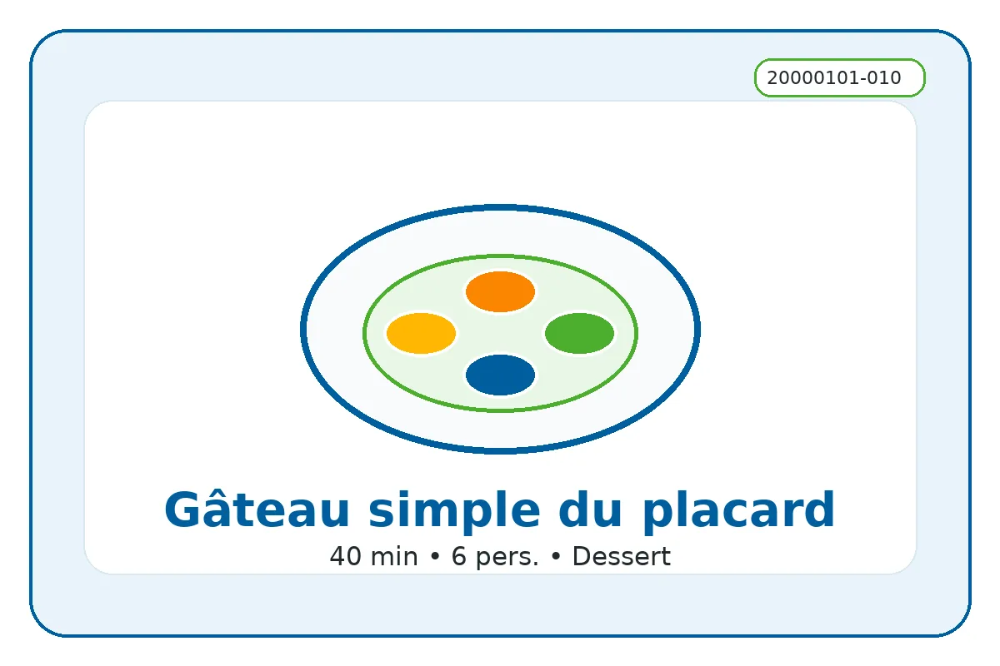

ID recette : 20000101-010
Gâteau simple du placard
Une recette simple et accessible : gâteau simple du placard.
Un gâteau de base avec des ingrédients du placard. Il peut être enrichi avec du chocolat, des fruits mûrs ou un peu de miel.

⚖️ Adapter les quantités
Le calcul adapte les quantités proportionnellement. Ajustez ensuite selon votre goût et la taille des produits.
🧺 Ingrédients avec quantités
Principaux
- 200 g — farine
- 100 g — sucre
- 3 pièces — œufs
Secondaires
- 120 ml — lait
Optionnels
- 80 g — chocolat
- 150 g — fruits
👩🍳 Préparation détaillée
- Préchauffer le four à 180 °C.
- Mélanger la farine et le sucre dans un saladier.
- Ajouter les œufs puis le lait petit à petit.
- Mélanger jusqu’à obtenir une pâte homogène.
- Ajouter le chocolat ou les fruits si disponibles.
- Verser dans un moule et cuire environ 30 minutes.
💡 Astuce anti-gaspi
Utiliser les restes compatibles pour éviter le gaspillage.
🔁 Variantes possibles
Adapter avec les produits disponibles : légumes, conserves, fromage ou féculents.
⚠️ Allergènes et conservation
Allergènes : gluten, œufs, lait
Conservation : À conserver 24 h au réfrigérateur dans une boîte fermée.
Réchauffage : À réchauffer doucement si nécessaire.
Vérifiez toujours les étiquettes des produits utilisés.
🔎 Filtres associés
Cliquez sur un bouton pour trouver les recettes associées au même champ.
Sous-catégorie : Gateau
Moment du repas : Dessert Gouter
Équipement : Four
📱 QR code
Scannez ce QR code pour retrouver cette fiche recette.
https://recettesducoeur.github.io/recettes/20000101-010.html